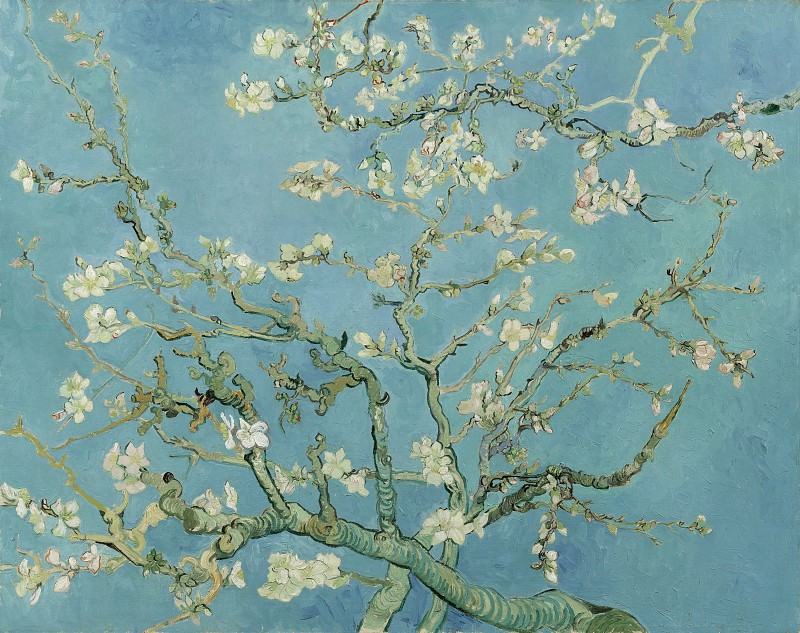
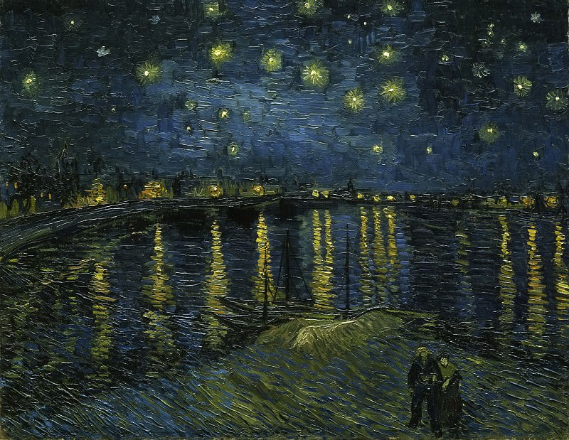
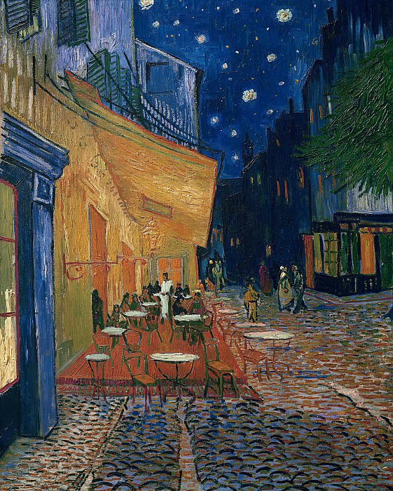
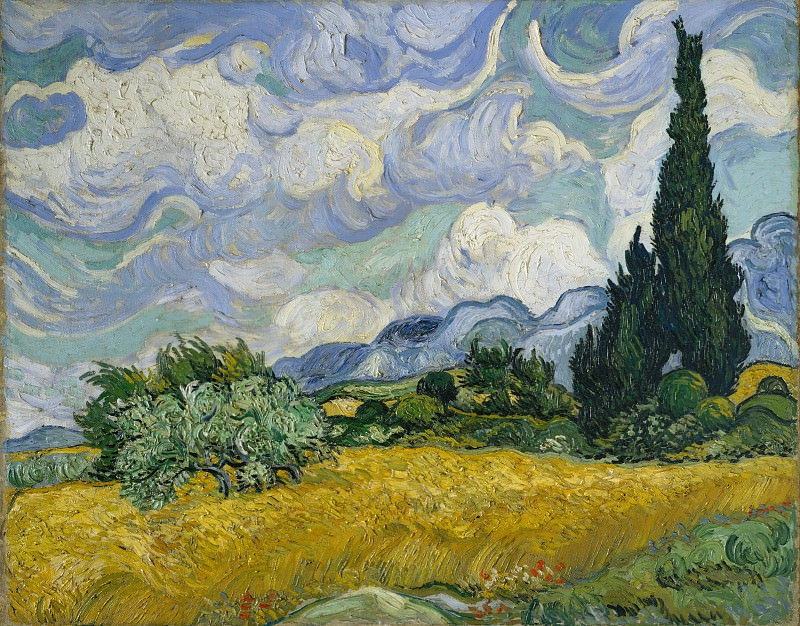
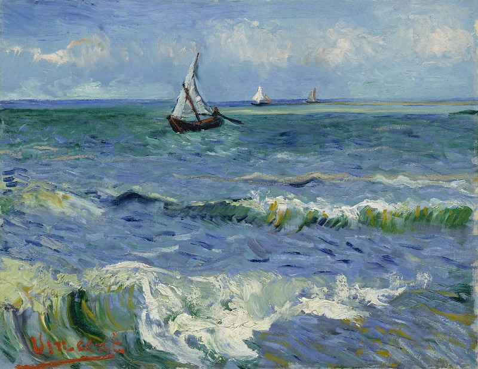
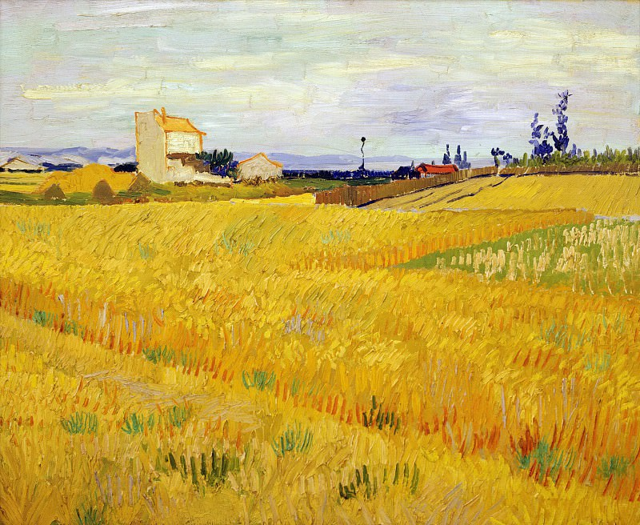

Galerie






Muzeul Van Gogh
Muzeul Van Gogh este un muzeu aflat în Amsterdam, capitala Olandei. Muzeul Van Gogh adăpostește un număr mare de picturi ale lui Van Gogh.
Muzeul Van Gogh este în mare parte un muzeu al post-impresionismului; Van Gogh aparținea acestui curent artistic. Muzeul deține peste 200 de picturi, peste 1.000 de desene, zeci de stampe, 4 albume și aproximativ 750 de scrisori trimise sau primite de marele artist. Foarte multe opere ale lui Van Gogh reprezintă munca de la țară.
Preț bilet:25€
Vizitează site-ul oficial
Contacte
Muzeul Van Gogh
Amsterdam, Olanda
Paulus Potterstraat 7, 1071 CX
info@vangoghmuseum-art.nl
Telefon
+31 20 570 5200
Program
Luni - Duminică
09:00 - 18:00